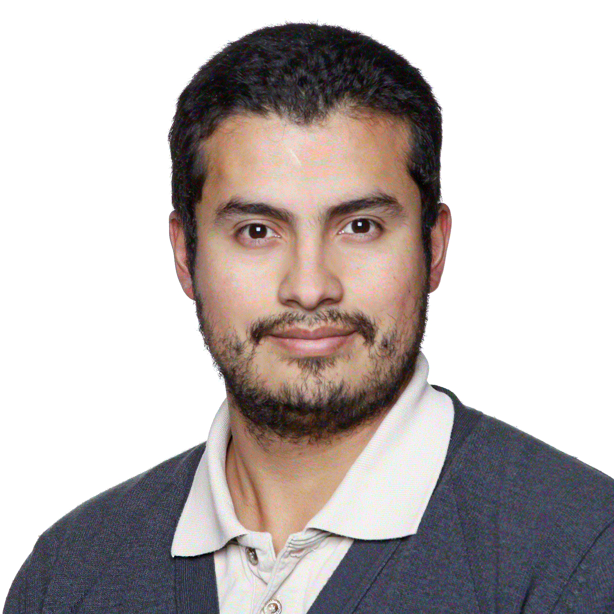

About me
I am a assistant professor within the Department of Mathematics at UNAL Bogota. I was awarded as Dr.rer.nat from TU Kaiserslautern (renamed in 2023 to RPTU) in 2021 under the supervision of Claudia Redenbach. I was supported by a scholarship of the DAAD: German Academic Exchange Service and the Institute Fraunhofer for Industrial and Applied Mathematics (ITWM), where I was a member of the department of image processing.
Also,I have an EngD from TU/e in Industrial Mathematics in 2016, and I obtained my BSc and MSc degrees in Mathematics and Applied Mathematics in 2009 and 2012 from Department of Mathematics at UNAL Bogota. My research interests are in image processing, mathematical modeling, numerical analysis, and scientific computing.

dgroldanj at unal.edu.co
Department of Mathematics
National University of Colombia
Cra 45 # 26-85
Oficce 323, Yu Takeuchi building
Bogotá,
Colombia
Latest Publications
Peer-reviewed- D. Roldán, C. Redenbach, K. Schladitz, M. Klingele and M. Godehardt (2021).
Reconstructing porous structures from FIB-SEM image data: Optimizing sampling scheme and image processing.
Ultramicroscopy, vol. 226, no. 113291.
[doi] - T. Prill, C. Redenbach, D. Roldan, M. Godehardt, K. Schladitz, S. Höhn, and K. Sempf(2020).
Simulating permeabilities based on 3D image data of a layered nano-porous membrane.
L. Calatroni, M. Donatelli, S. Morigi, M. Prato and M. Santacesaria (eds.)
International Journal of Solids and Structures, 184, 3-13.
[doi] - T. Ott, D. Roldán, C. Redenbach, K. Schladitz, M. Godehardt, and S. Höhn(2019).
Three-dimensional structural comparison of tantalum glancing angle deposition thin films by FIB-SEM.
Journal of Sensors and Sensor Systems, 8, 305-315.
[doi]